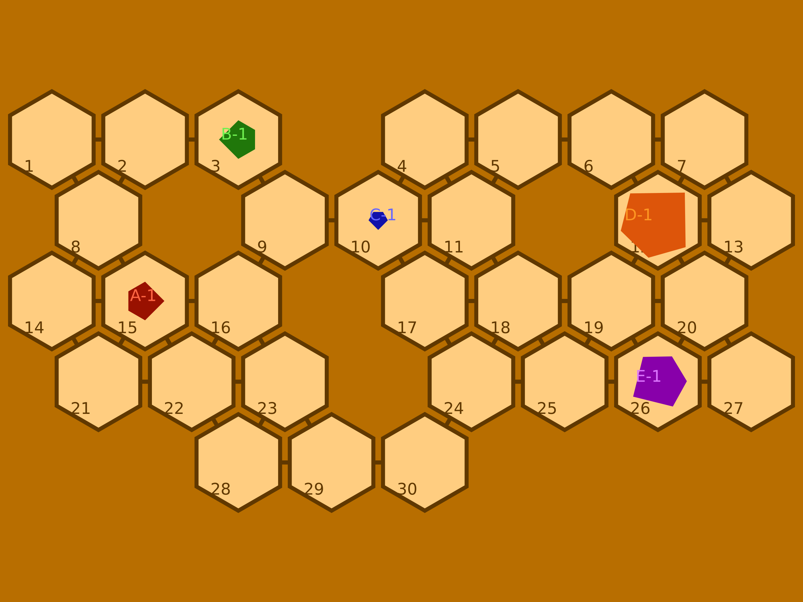

TiledLand
TiledLand is a Python library for simulating flat worlds composed of convex polygonal tiles. Each tile can contain mobile objects; its connections to other tiles form a movement graph.

The project is used to experiment with geometry, navigation, and multi-agent systems. This documentation describes the local code of version 0.1.6, including its current capabilities and limitations.
Getting Started
- Install the library and create your first scene.
- Understand entities and tiles and tabletops.
- Produce an SVG or PNG rendering.
- Associate bodies with actors and program a decision.
Model Organization
| Object | Role |
|---|---|
Point, Line, Convex, Box, Grid |
Geometry and discrete maps |
Entity |
Object with a shape, position, and orientation |
Tile |
Entity representing an area, its neighbors, and its content |
Tabletop |
Collection of tiles and connection graph |
Actor |
Association between an agent and one or more bodies |
Land |
Board, body models, and actor collection |
Agent, Action |
Behavioral sketch using state machines |
Artist |
Rendering on a graphic medium |
Scope
Scene constructions, transformations, and renderings already allow for experiments. The Agent layer remains partial; the examples in this documentation avoid its currently defective methods. Consult the known limitations before building a simulation loop.
The geometry, map import, serialization, and practical reference pages complete the journey. The contribution guide explains how to test and build this documentation.